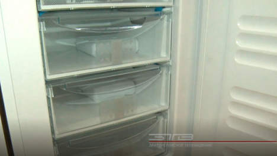
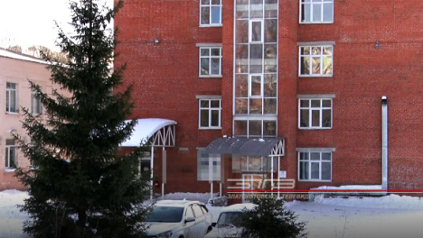
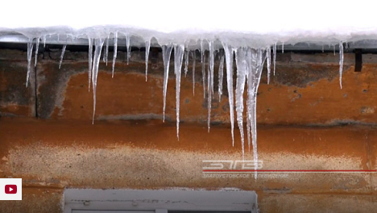
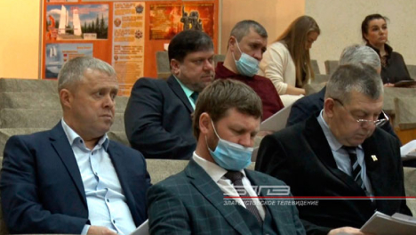

Все новости
-
 - Медицина Общество
Благодаря поддержке предпринимателей. Златоустовские поликлиники оснастили холодильными установками для хранения вакцины
-
 - Медицина
Госпитальная база закрыта, учреждение вернётся в «доковидный» режим после дезинфекции. Роддом Златоуста вновь откроет свои двери 8 февраля
-
 - Коммуналка
Осторожно, сосульки! Оттепель на этой неделе привела к тому, что на крышах многих домов образовались опасные ледяные наросты
-
- Политика
В четыре раза меньше вопросов, чем обычно. В Златоусте прошло первое в 2021-м году Собрание депутатов
-
- Коммуналка
В Златоусте сотрудники теротдела проверят магазин, из которого выбрасывали строительный мусор на контейнерную площадку
-
 - Общество
ДЧ: Первое Собрание депутатов 2021 года: планируется работа на весь год
- 1
- 2
- 3
- 4
- ...
- 123